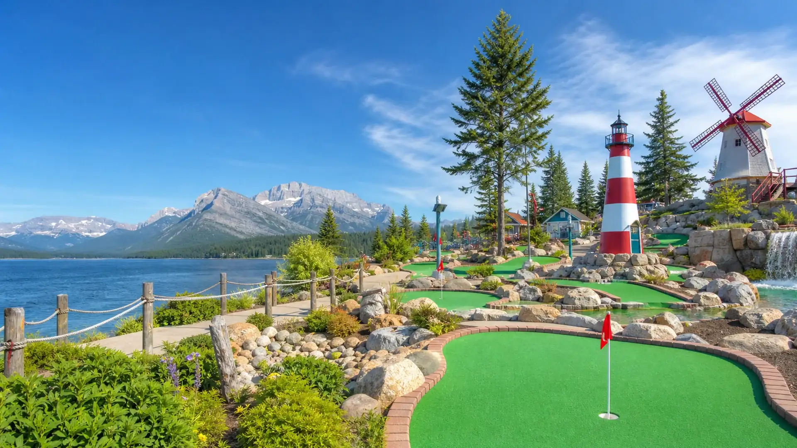

Musgrave Harbour Amusements LTD
Musgrave Harbour, Newfoundland and Labrador
Looking for mini golf in Musgrave Harbour, Newfoundland and Labrador? Musgrave Harbour Amusements LTD gives players an easy-to-plan putting outing with the practical...
Accessible
View course
Confirm current prices